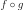
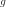
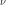
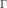
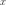

Functions¶
General mathematical functions¶
Function(*args) |
Function base class. |
SymbolicFunction(*args) |
Symbolic function. |
LinearFunction(*args) |
Linear numerical math function. |
QuadraticFunction(*args) |
Quadratic function. |
DatabaseFunction(*args) |
Pre-evaluated function. |
PythonFunction(*args) |
Override Function from Python. |
OpenTURNSPythonFunction([n, p]) |
Override Function from Python. |
Algebra of functions¶
AggregatedFunction(*args) |
Aggregated function. |
ComposedFunction(*args) |
Composed function. |
DualLinearCombinationFunction(*args) |
Linear combination of functions with vectorial weights. |
IndicatorFunction(*args) |
Indicator function. |
LinearCombinationFunction(*args) |
Linear combination of functions. |
ParametricFunction(*args) |
Parametric function. |
ProductFunction(*args) |
Product function. |
PointToPointEvaluation(*args) |
Evaluation of the composition  where  acts on points and  produces points. produces points. |
FieldToFieldConnection(*args) |
Composition function where acts on fields and produces fields. |
FieldToPointConnection(*args) |
Composition function where acts on fields and produces points. |
PointToFieldConnection(*args) |
Composition function where acts on points and produces fields. |
PointToPointConnection(*args) |
Composition function where acts on points and produces points. |
Field and mixed functions¶
FieldFunction(*args) |
Function mapping a field to a field. |
FieldToPointFunction(*args) |
Function mapping a field into a point. |
PointToFieldFunction(*args) |
Function mapping a point into a field. |
PythonFieldFunction(*args) |
Override FieldFunction from Python. |
ValueFunction(*args) |
Function mapping a field to a field. |
VertexFunction(*args) |
Function mapping a field to a field. |
VertexValueFunction(*args) |
Function mapping a field to a field. |
PythonFieldFunction(*args) |
Override FieldFunction from Python. |
PythonFieldToPointFunction(*args) |
Override FieldToPointFunction from Python. |
PythonPointToFieldFunction(*args) |
Override PointToFieldFunction from Python. |
OpenTURNSPythonFieldFunction([n, p, s]) |
|
OpenTURNSPythonFieldToPointFunction([n, p, s]) |
Override FieldToPointFunction from Python. |
OpenTURNSPythonPointToFieldFunction([n, p, s]) |
Override PointToFieldFunction from Python. |
Collection of functions¶
Basis(*args) |
Basis. |
FunctionalBasis(*args) |
Proxy of C++ OT::FunctionalBasis. |
OrthogonalBasis(*args) |
Orthogonal basis. |
BasisSequence(*args) |
Sequence of basis. |
Finite differentiation schemes¶
CenteredFiniteDifferenceGradient(*args) |
First order centered finite-difference scheme. |
CenteredFiniteDifferenceHessian(*args) |
Second order centered finite-difference scheme. |
FiniteDifferenceGradient(*args) |
Base class for first order finite-difference schemes. |
FiniteDifferenceHessian(*args) |
Base class for second order centered finite-difference scheme. |
NonCenteredFiniteDifferenceGradient(*args) |
First order non-centered finite-difference scheme. |
FiniteDifferenceStep(*args) |
Base class to define finite difference steps. |
ConstantStep(*args) |
Constant step. |
BlendedStep(*args) |
Blended step. |
Evaluation functions¶
EvaluationImplementation(*args) |
Numerical math evaluation implementation. |
AggregatedEvaluation(*args) |
Aggregated numerical math evaluation implementation. |
SymbolicEvaluation(*args) |
Proxy of C++ OT::SymbolicEvaluation. |
ComposedEvaluation(*args) |
Proxy of C++ OT::ComposedEvaluation. |
DatabaseEvaluation(*args) |
Data based math evaluation implementation. |
DualLinearCombinationEvaluation(*args) |
Dual linear combination evaluation implementation. |
IndicatorEvaluation(*args) |
Proxy of C++ OT::IndicatorEvaluation. |
LinearCombinationEvaluation(*args) |
Proxy of C++ OT::LinearCombinationEvaluation. |
LinearEvaluation(*args) |
Linear numerical math evaluation implementation. |
MarginalTransformationEvaluation(*args) |
Marginal transformation evaluation. |
NoEvaluation(*args) |
Proxy of C++ OT::NoEvaluation. |
ParametricEvaluation(*args) |
Proxy of C++ OT::ParametricEvaluation. |
PiecewiseHermiteEvaluation(*args) |
Proxy of C++ OT::PiecewiseHermiteEvaluation. |
PiecewiseLinearEvaluation(*args) |
Proxy of C++ OT::PiecewiseLinearEvaluation. |
P1LagrangeEvaluation(*args) |
Data based math evaluation implementation. |
ProductEvaluation(*args) |
Proxy of C++ OT::ProductEvaluation. |
ProductPolynomialEvaluation(*args) |
Product polynomial evaluation implementation. |
QuadraticEvaluation(*args) |
Proxy of C++ OT::QuadraticEvaluation. |
Gradient functions¶
GradientImplementation(*args) |
Numerical math gradient implementation. |
SymbolicGradient(*args) |
Proxy of C++ OT::SymbolicGradient. |
ComposedGradient(*args) |
Proxy of C++ OT::ComposedGradient. |
ConstantGradient(*args) |
Proxy of C++ OT::ConstantGradient. |
DualLinearCombinationGradient(*args) |
Dual linear combination gradient implementation. |
LinearCombinationGradient(*args) |
Proxy of C++ OT::LinearCombinationGradient. |
LinearGradient(*args) |
Linear numerical math gradient implementation. |
NoGradient(*args) |
Proxy of C++ OT::NoGradient. |
ParametricGradient(*args) |
Proxy of C++ OT::ParametricGradient. |
ProductGradient(*args) |
Proxy of C++ OT::ProductGradient. |
Hessian functions¶
HessianImplementation(*args) |
Numerical math hessian implementation. |
SymbolicHessian(*args) |
Proxy of C++ OT::SymbolicHessian. |
ComposedHessian(*args) |
Proxy of C++ OT::ComposedHessian. |
ConstantHessian(*args) |
Proxy of C++ OT::ConstantHessian. |
DualLinearCombinationHessian(*args) |
Dual linear combination hessian implementation. |
LinearCombinationHessian(*args) |
Proxy of C++ OT::LinearCombinationHessian. |
NoHessian(*args) |
Proxy of C++ OT::NoHessian. |
ParametricHessian(*args) |
Proxy of C++ OT::ParametricHessian. |
ProductHessian(*args) |
Proxy of C++ OT::ProductHessian. |
Differential equation solvers¶
ODESolver(*args) |
ODE solver base class. |
RungeKutta(*args) |
Runge-Kutta fourth-order method. |
Special constants & functions¶
Numerical constants¶
Special functions¶
Special functions are implemented as C++ static methods and are hence casted as Python functions.
SpecFunc_BesselI0(x) |
Modified first kind Bessel function of order 0. |
SpecFunc_BesselI1(x) |
Modified first kind Bessel function of order 1. |
SpecFunc_BesselK(nu, x) |
Modified second kind Bessel function of order . |
SpecFunc_Beta(a, b) |
Beta function  . . |
SpecFunc_BinomialCoefficient(n, k) |
Binomial coefficient. |
SpecFunc_BitCount(n) |
Compute the number of bits set to 1 in an integer. |
SpecFunc_Cbrt(x) |
Cubit root function. |
SpecFunc_Dawson(*args) |
Dawson function. |
SpecFunc_Debye(x, n) |
Debye function of order  . . |
SpecFunc_DiGamma(x) |
Digamma function. |
SpecFunc_DiGammaInv(a) |
Inverse of the DiGamma function. |
SpecFunc_DiLog(x) |
Dilogarithm function. |
SpecFunc_Ei(*args) |
Exponential integral function. |
SpecFunc_Erf(*args) |
Error function Erf. |
SpecFunc_ErfC(*args) |
Complementary error function ErfC. |
SpecFunc_ErfCX(*args) |
ErfCX function. |
SpecFunc_ErfI(*args) |
Imaginary error function ErfI. |
SpecFunc_ErfInverse(x) |
Inverse of the error function Erf. |
SpecFunc_Expm1(z) |
Expm1 function. |
SpecFunc_Faddeeva(z) |
Complex Faddeeva function. |
SpecFunc_FaddeevaIm(x) |
Imaginary part of the Faddeeva function. |
SpecFunc_Gamma(*args) |
Gamma function . |
SpecFunc_GammaCorrection(a) |
GammaCorrection function. |
SpecFunc_HyperGeom_1_1(*args) |
Hypergeometric function of type (1,1). |
SpecFunc_HyperGeom_2_1(p1, p2, q1, x) |
Hypergeometric function of type (2,1). |
SpecFunc_HyperGeom_2_2(p1, p2, q1, q2, x) |
Hypergeometric function of type (2,2). |
SpecFunc_IGamma1pm1(a) |
IGamma1pm1 function. |
SpecFunc_IncompleteBeta(a, b, x[, tail]) |
Incomplete Beta function. |
SpecFunc_IncompleteBetaInverse(a, b, x[, tail]) |
Inverse of the incomplete Beta function. |
SpecFunc_IncompleteGamma(a, x[, tail]) |
Incomplete Gamma function. |
SpecFunc_IncompleteGammaInverse(a, x[, tail]) |
Inverse of the incomplete Gamma function with respect to . |
SpecFunc_LambertW(x[, principal]) |
Lambert W function. |
SpecFunc_LnBeta(a, b) |
Logarithm of the Beta function. |
SpecFunc_LnGamma(a) |
Logarithm of the Gamma function. |
SpecFunc_Log1MExp(x) |
Log1MExp function. |
SpecFunc_Log1p(z) |
Log1p function. |
SpecFunc_Log2(n) |
Integer base 2 logarithm of . |
SpecFunc_LogBesselI0(x) |
Logarithm of the modified first kind Bessel function of order 0. |
SpecFunc_LogBesselI1(x) |
Logarithm of the modified first kind Bessel function of order 1. |
SpecFunc_LogBesselK(nu, x) |
Logarithm of the modified second kind Bessel function of order . |
SpecFunc_LogBeta(a, b) |
Logarithm of the Beta function. |
SpecFunc_LogGamma(*args) |
Logarithm of the Gamma function. |
SpecFunc_LogGamma1p(a) |
LogGamma1p function. |
SpecFunc_NextPowerOfTwo(n) |
Smallest power of two greater or equal to the given . |
SpecFunc_Psi(x) |
Psi function. |
SpecFunc_RegularizedIncompleteBeta(a, b, x) |
Regularized incomplete Beta function. |
SpecFunc_RegularizedIncompleteBetaInverse(a, b, x) |
Inverse of the regularized incomplete Beta function. |
SpecFunc_RegularizedIncompleteGamma(a, x[, tail]) |
Regularized incomplete Gamma function. |
SpecFunc_RegularizedIncompleteGammaInverse(a, x) |
Inverse of the regularized incomplete Gamma function. |
SpecFunc_TriGamma(x) |
TriGamma function. |
External code coupling¶
These methods are dedicated to coupling external codes by means of text files.
coupling_tools.replace(infile, outfile, …) |
Replace values in a file using delimiters. |
coupling_tools.execute(cmd[, workdir, …]) |
Launch an external process. |
coupling_tools.get_value(filename[, token, …]) |
Get a value from a file using a delimiter and/or offsets. |
coupling_tools.get_line_col(filename[, …]) |
Get a value at specific line/columns coordinates. |
coupling_tools.get_regex(filename, patterns) |
Get values from a file using regex. |
coupling_tools.get(filename[, tokens, …]) |
Get several values from a file using delimiters and/or offsets. |
1-D functions¶
UniVariateFunction(*args) |
Base class for univariate functions. |